![iFCM GROUP]()
Вайбкодинг:
урок второй
От «работает у меня» до «работает всегда». Выносим бота и приложение с ноутбука на сервер, привязываем свой адрес, включаем замок в адресной строке и проверяем за агентом. Программировать не нужно.
Главная мысль урока
То, что работает у вас на ноутбуке, — ещё не продукт. Продукт — это то, что работает, когда вас нет: ночью, в отпуске, с закрытой крышкой. Весь сегодняшний урок про этот переход.
В первом уроке мы собрали Telegram-бота «Моё утро» и запустили его на своём компьютере. Пока компьютер включён — бот отвечает. Закрыли крышку — тишина. Сегодня мы это чиним: бот переезжает на арендованный сервер, HTML-приложение получает собственный адрес в интернете, а вы получаете словарь, который позволит понимать, что именно делает агент, когда деплоит за вас.
Как здесь всё устроено
Ходите свободно
Модули не заперты. Можно начать с практики, вернуться к теории, перечитать любой кусок через месяц. Урок работает и как справочник.
Тренажёры вместо кода
В каждом модуле есть что покрутить руками: калькулятор сервера, симулятор DNS-записи, конструкторы промптов, разбор реальных находок. Агент для этого не нужен.
Прогресс сохраняется
Закроете вкладку и вернётесь — очки, отметки и пройденные модули останутся на месте. Первый урок при этом не перетрётся: у них раздельная память.
Вся теория, все тренажёры и публикация статической страницы на GitHub Pages — бесплатны. Деньги нужны только на одном участке: аренда сервера (от 200 ₽ в месяц) и домен (несколько сотен рублей в год). Если сейчас такой возможности нет — проходите теорию и тренажёры, практику отложите. Знание не пропадёт.
Если что-то непонятно — спросите у того агента, в котором работаете. Скриншот непонятного места, вставить в чат, написать «объясни простыми словами, я только начинаю разбираться». Это работает лучше, чем поиск в интернете, потому что модель видит вашу ситуацию целиком. В каждом модуле для этого есть готовая кнопка.
Что понадобится
| Что | Зачем | Когда |
|---|---|---|
| Компьютер с интернетом | Всё происходит на нём | Сразу |
| Аккаунт на GitHub | Код едет на сервер через него, статика публикуется оттуда же | Модуль 8 |
| Доступ к ИИ-агенту | Claude Code, Codex, Cursor или российский аналог | Модуль 6 |
| Карта для оплаты хостинга | Только если делаете практику с сервером | Модуль 6 |
| Бот из первого урока | Именно его мы будем переселять | Модуль 6 |
Всё, что мы сегодня делаем, — это выставление сервиса в интернет. На личных проектах отвечаете только вы. Как только речь заходит о рабочих данных, рабочих системах и коллегах-пользователях — это разговор с вашей ИТ-службой и службой безопасности, а не самостоятельное решение. В одиннадцатом модуле разобрано, о чём именно с ними говорить.
Где должно жить приложение
Три места, три цены, три набора возможностей. Выбор делается до того, как вы отдаёте задачу агенту, — иначе переделывать придётся дважды.
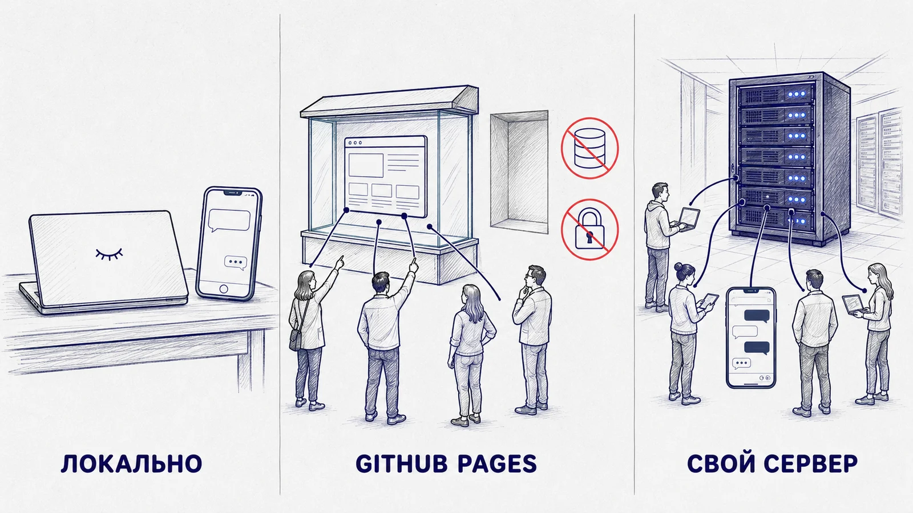
Три варианта размещения
| Вариант | Работает, когда | Кто видит | Цена | Кому подходит |
|---|---|---|---|---|
| Локально на вашем компьютере |
Компьютер включён и программа запущена | Только вы | 0 ₽ | Инструменты для себя, работа с чувствительными файлами |
| GitHub Pages бесплатный хостинг статики |
Всегда | Все, у кого есть ссылка | 0 ₽ | Одностраничные приложения, лендинги, калькуляторы, игры |
| Свой сервер (VPS) арендованный компьютер |
Всегда | Все, кому дали доступ | 200–800 ₽/мес | Боты, базы данных, вход по логину, всё многопользовательское |
Чего GitHub Pages не может в принципе
Pages отдаёт файлы такими, какие они лежат в репозитории. Никакой программы на стороне сервера там не выполняется. Из этого следуют три жёстких ограничения:
- Нет базы данных. Комментарии, заявки, список пользователей хранить негде — данные живут только в браузере конкретного человека и у соседа их не будет
- Нет входа по логину и паролю. Проверять пароль некому: любая «проверка» в браузере открывается через инструменты разработчика за полминуты
- Нет секретов. Всё, что попало в файлы, видно всем. Платный API-ключ туда класть нельзя
Зато Pages бесплатен, работает круглосуточно и даёт ссылку, которая открывается у кого угодно. Для «Генератора градиентных фонов» с вебинара этого хватило целиком.
Артефакт, собранный в чате ИИ, открывается не у всех: доступность сервиса зависит от страны и настроек сети получателя. Страница на GitHub Pages — обычный сайт по обычному адресу. Это единственная причина, по которой на вебинаре мы сначала выложили приложение на Pages, а уже потом занялись сервером.
Четыре вопроса, которые решают всё
Ответьте на них про своё приложение. Каждое «да» тянет в сторону сервера.
Сервер: что вы арендуете и за что платите
Форма аренды состоит из пяти полей. Разберём каждое, чтобы вы не выбирали наугад и не переплачивали в три раза за то, что вам не нужно.
Сервер — это компьютер, к которому есть доступ по сети. От вашего ноутбука он отличается тремя вещами:
- Он включён всегда и стоит в дата-центре с резервным питанием и охлаждением
- У него есть постоянный адрес в интернете, по которому его находят
- У него нет монитора, клавиатуры и мыши — именно поэтому на сервер заходят текстом
VPS или VDS — это не отдельная железка, а выделенная вам часть большой машины: свои процессорные ядра, своя память, свой диск, свой адрес. Соседи по железу вас не видят.
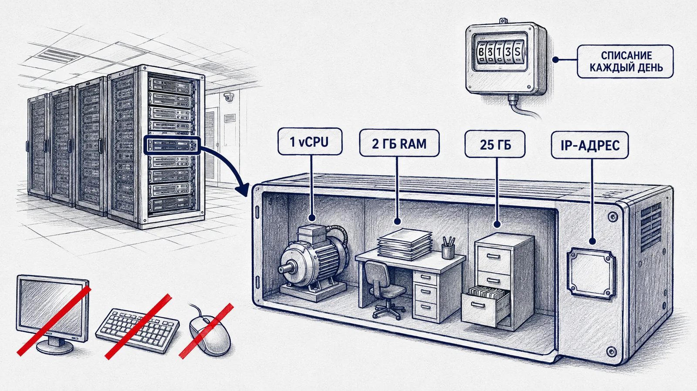
Форма аренды, поле за полем
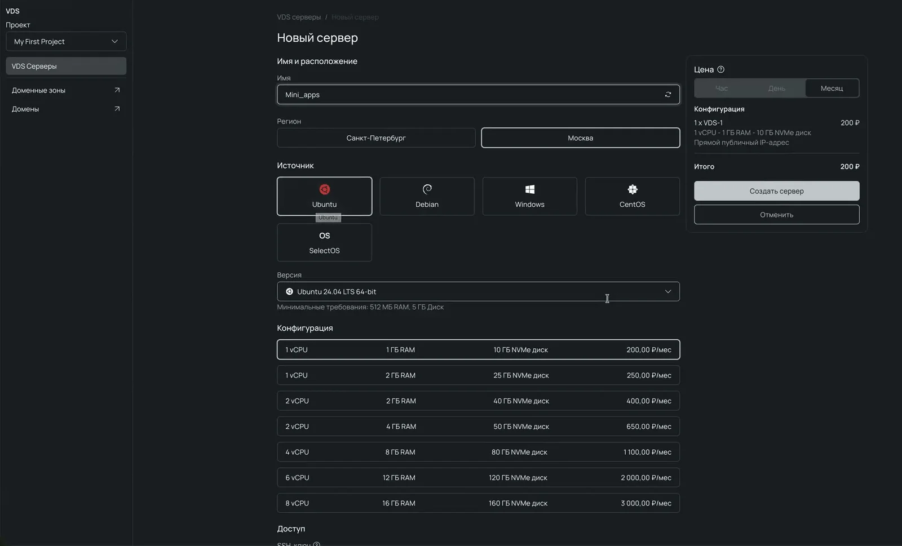
| Поле | Что выбрать | Почему |
|---|---|---|
| Имя | Понятное вам: mini-apps, bots |
Через полгода у вас будет три сервера, и «server-1» ничего не скажет |
| Регион | Ближайший к пользователям | Влияет на скорость отклика. Для бота разница незаметна, для сайта — заметна |
| Образ (ОС) | Ubuntu LTS | По Ubuntu больше всего документации и готовых примеров — агент реже ошибается |
| Конфигурация | Начните с минимальной | Бот и статический сайт почти не грузят процессор. Добавить мощности можно потом, без переезда |
| SSH-ключ | Добавьте сразу, при создании | Тогда пароля к серверу не будет существовать вообще — и его нельзя будет подсмотреть |
LTS расшифровывается как long-term support — долгая поддержка. Такие версии Ubuntu выходят раз в два года (22.04, 24.04, 26.04) и получают обновления безопасности пять лет. Промежуточные версии живут девять месяцев, и через год ваш сервер останется без обновлений. Берите LTS — почти всегда это предложение по умолчанию.
Сколько это стоит на самом деле
Деньги списывают ежедневно, а не раз в месяц: 250 ₽ в месяц превращаются примерно в 8 ₽ в день. Это удобно — можно попробовать неделю и удалить. Но здесь же прячется первая неожиданность.
Кнопка «остановить» гасит операционную систему, но диск и адрес остаются зарезервированными за вами — и оплачиваются. Чтобы списания прекратились, сервер надо удалить. Перед удалением заберите с него всё, что нужно: диск исчезнет вместе с сервером.
Год работы бота и двух приложений выходит примерно в стоимость одного делового обеда. Дорогое в вайбкодинге — не хостинг, а ваше время и токены агента.
SSH: как попасть внутрь и почему пароль — плохо
У сервера нет монитора. Единственная дверь — текстовая, и её надо закрыть правильно в первые же полчаса. Иначе за вас это сделают другие.
SSH — Secure Shell, «защищённая оболочка». Это способ оказаться внутри чужого компьютера, сидя за своим: вы вводите команду в терминале, приглашение меняется — и дальше вы уже там.
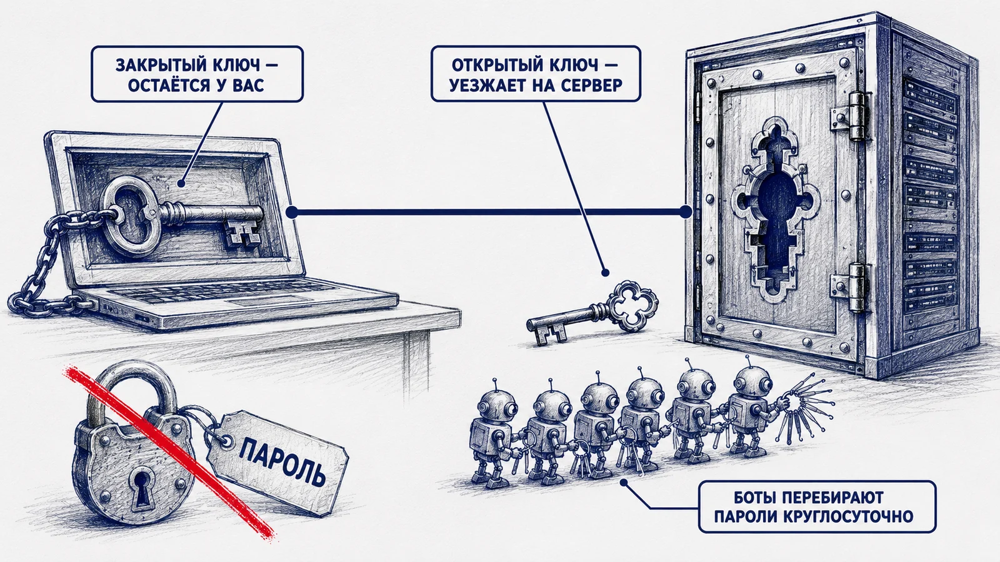
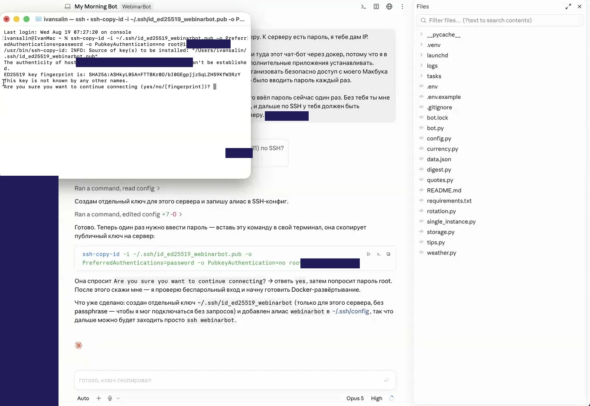
Два файла вместо пароля
SSH-ключ — это пара файлов, и путать их нельзя:
Закрытый ключ
Остаётся на вашем компьютере и не уезжает никуда никогда. Ни в репозиторий, ни в чат агенту, ни коллеге в мессенджер. Потеряли — выпускаете новый.
Открытый ключ
Копируется на сервер. Его не жалко: сам по себе он бесполезен, это просто замочная скважина под ваш ключ.
Дальше сервер сверяет одно с другим и пускает. Пароль по сети не передаётся вообще — передавать нечего.
Что сделать с сервером в первые полчаса
Серверы с паролем перебирают автоматы. Это не люди: боты непрерывно сканируют сеть, находят новые адреса и начинают подбирать пароли — обычно в первые часы после появления сервера в сети. На вебинаре мы это обсуждали, и вот полный список того, что закрывает вопрос.
Не показывайте пароль от сервера на демонстрации экрана и не отправляйте его в переписку. Если это всё-таки случилось — считайте пароль скомпрометированным и смените его немедленно, как утёкший ключ из первого урока. Лучший вариант — добавить SSH-ключ при создании сервера, тогда пароля просто не будет.
Только что арендовал VPS на Ubuntu, доступ пока по паролю. Приведи его в безопасное состояние и объясняй каждый шаг по ходу — я только начинаю разбираться. Порядок такой: 1. Сначала покажи план и дождись моего согласия 2. Настрой вход по SSH-ключу. Скажи мне ровно одну команду, которую я выполню сам в своём терминале 3. Проверь, что ключ работает, НЕ закрывая текущее подключение 4. Только после успешной проверки отключи вход по паролю 5. Заведи отдельного пользователя с sudo, вход root по SSH закрой 6. Включи файрвол, оставь снаружи только те порты, которые реально нужны, и перечисли мне их 7. Поставь fail2ban и включи автоматические обновления безопасности В конце отчитайся списком: что открыто наружу, под каким пользователем я теперь захожу и что я должен сделать руками, если потеряю ключ.
Как на одном сервере уживаются два приложения
Здесь чаще всего путают две разные вещи. Docker и обратный прокси решают разные задачи, и понимание разницы экономит часы недоумения.
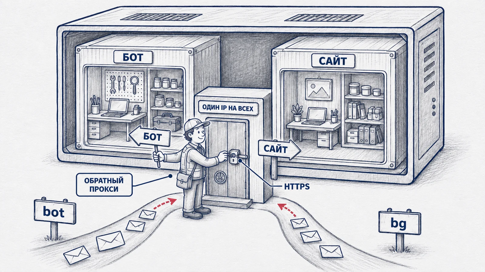
Docker: коробка с приложением
Классическая беда звучит так: «у меня работает, а на сервере нет». Причина почти всегда одна — разные версии языка и разный набор библиотек. Docker закрывает вопрос: приложение упаковывается вместе со своим окружением в одну коробку, и коробка везде одинаковая.
Что это даёт на практике:
- Бот на Python и сайт на чём угодно живут рядом и не мешают друг другу — у каждого свои версии всего
- Приложение можно снести и поднять заново одной командой, не трогая остальные
- Переезд на другой сервер перестаёт быть приключением
Первая. Docker не нужен, чтобы отправить код в GitHub или задеплоить приложение. Git и деплой от него не зависят. Docker Desktop на своём компьютере нужен только в одном случае — если вы собираетесь собирать и запускать контейнеры локально.
Вторая. Возможность держать два приложения на одном сервере даёт не Docker. Об этом — следующий раздел.
Обратный прокси: привратник у единственной двери
У сервера один IP-адрес и одна пара «парадных» дверей: порт 80 для обычного HTTP и 443 для защищённого HTTPS. Два приложения не могут занять один и тот же порт. Поэтому перед ними ставят обратный прокси — программу, которая одна слушает 80 и 443, смотрит, на какое имя пришёл запрос, и передаёт его нужному приложению внутрь.
| Запрос пришёл на | Прокси отправляет |
|---|---|
bg.вашдомен.ru | в контейнер с генератором фонов |
bot.вашдомен.ru | в контейнер с ботом |
вашдомен.ru | на основной сайт |
Популярный выбор для таких задач — Caddy: он не только раскидывает запросы, но и сам получает и продлевает сертификат HTTPS, без единой настройки. Именно его агент поставил на вебинаре. Классическая альтернатива — nginx, он мощнее и настраивается руками.
Пока достаточно запомнить: замок в адресной строке ставит именно прокси. Что такое сертификат, что он на самом деле подтверждает, почему он бесплатный, живёт 90 дней и не выпустится, пока домен не начнёт указывать на ваш сервер, — всё это разбираем в разделе 5 «Домены, DNS и HTTPS». Здесь важна только связка: одна дверь, один привратник, замок вешает он же.
Ровно одно: «поставь через Docker, снаружи пусть разбирает Caddy» — это готовая формулировка для агента, когда на сервере будет больше одного приложения. Разбираться в устройстве контейнеров вам не нужно, но нужно понимать, почему приложения не подрались за порт.
Домены, DNS и замок в адресной строке
Как превратить голый набор цифр в человеческий адрес, почему поддомены бесплатны, а домены нет, и что на самом деле означает замочек рядом с адресом.
Домен, поддомен и подстраница
Три разные вещи, которые постоянно путают. Правило простое: поддомен пишется слева от основного имени через точку, подстраница — справа через косую черту.
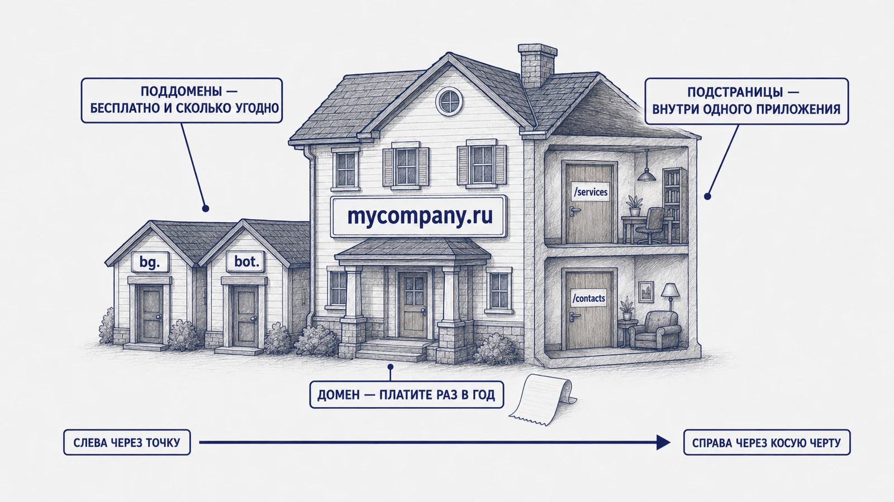
| Что | Пример | Это | Цена |
|---|---|---|---|
| Домен второго уровня | вашдомен.ru | Ваше имя в интернете | Раз в год |
| Поддомен | bg.вашдомен.ru | Отдельное приложение | Бесплатно |
| Ещё поддомен | bot.вашдомен.ru | Ещё одно приложение | Бесплатно |
| Подстраница | вашдомен.ru/services | Страница внутри одного приложения | Бесплатно |
Частая ошибка новичка: сделал приложение — купил под него отдельный домен, сделал второе — купил ещё один. Через год у вас пять доменов и пять ежегодных списаний. Правильнее взять одно общее имя (своя фамилия, название направления, название компании) и вешать на него поддомены — они бесплатны и их может быть сколько угодно.
Отдельный домен оправдан тогда, когда проект коммерческий и должен выглядеть самостоятельно: своё имя, своя почта, своя визитка.
DNS: как имя превращается в адрес
Компьютеры находят друг друга по цифрам вида 135.106.193.131. Люди так жить не хотят.
Между ними стоит DNS — всемирная адресная книга. Когда браузер видит bg.вашдомен.ru,
он спрашивает у неё: «какой у этого имени адрес?» — и получает цифры.
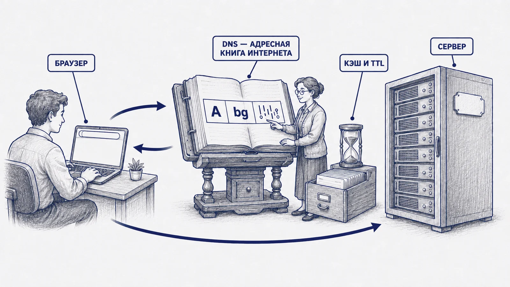
Запись, которая связывает имя с адресом сервера, называется A-запись. В панели регистратора она состоит из трёх полей — и все три легко перепутать.
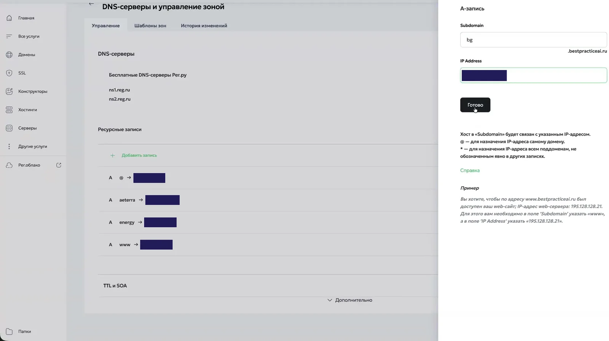
bg.mycompany.ru вёл на сервер 203.0.113.10.Почему адрес не открывается сразу
Ответы адресной книги кэшируются по всему пути: у вашего провайдера, у операционной системы, в браузере. Сколько держать ответ в кэше — задаёт TTL самой записи. Пока старый ответ не протух, никто не пойдёт спрашивать заново.
- Новая запись, которой раньше не было, обычно расходится за минуты
- Изменение существующей записи ждёт, пока истечёт её прежний TTL, — до нескольких часов
- Совет «подождите сутки» — не механизм, а перестраховка на самый долгий TTL
Отсюда практическое правило: если планируете менять адрес — снизьте TTL заранее, за день до переезда. А новую запись добавляйте сразу, ещё до того, как агент закончит настройку сервера: пока он работает, она как раз разойдётся.
Замок в адресной строке
HTTPS — это обычный HTTP плюс шифрование. Замочек рядом с адресом означает две вещи, и обе стоит понимать точно:
Что сертификат подтверждает
Что владелец сайта контролирует это доменное имя, и что канал между браузером и сервером зашифрован: провайдер и владелец Wi-Fi не прочитают, что вы отправили.
Чего он не подтверждает
Ни честности владельца, ни качества сайта, ни «легальности». У мошеннического сайта тоже бывает замочек — он бесплатный и выдаётся автоматически.
| Вопрос | Ответ |
|---|---|
| Кто выдаёт | Чаще всего Let's Encrypt — некоммерческий центр сертификации |
| Сколько стоит | Бесплатно |
| Сколько действует | 90 дней |
| Кто продлевает | Caddy или аналогичный прокси — сам, заранее, без вашего участия |
| Что нужно для выпуска | Чтобы A-запись уже указывала на этот сервер |
Сначала A-запись, потом сертификат. Центр сертификации проверяет, что домен действительно ведёт на ваш сервер, — иначе кто угодно выпустил бы сертификат на чужое имя. Если запись ещё не разошлась, выпуск не удастся, но это не поломка: Caddy повторяет попытку сам, с нарастающей паузой. Именно так это и происходило на вебинаре.
Переезд бота на сервер
Восемь шагов от «работает, пока ноутбук включён» до «работает всегда». Каждый отмечайте галочкой — прогресс сохранится.
Бот из первого урока живёт на арендованном сервере в контейнере, перезапускается сам после перезагрузки, обновляется из вашего репозитория и не зависит от того, включён ли ваш компьютер. Секреты при этом на сервере, а не в репозитории.
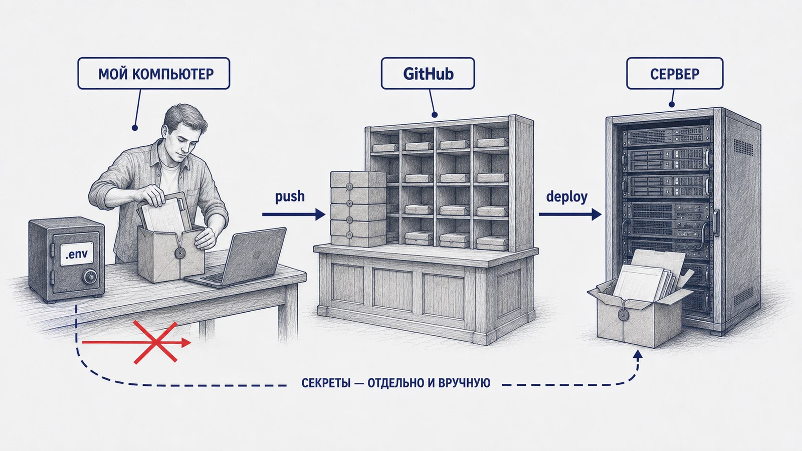
Разбор главного промпта
На вебинаре задача агенту прозвучала примерно так. Разберём по фразам, зачем нужна каждая.
У меня появился доступ к серверу, есть пароль, сейчас дам IP. Наша задача — перенести туда этот чат-бот через докер, потому что я в дальнейшем планирую ставить дополнительные приложения. Перед этим организуй безопасный доступ с моего компьютера по SSH, чтобы мне не нужно было вводить пароль каждый раз. Настрой всё так, чтобы я ввёл пароль один раз — ты просто скажешь, что и куда вставить. Этот бот уже размещён на моём GitHub. Проследи, что там всё синхронизировано и последние версии на месте. Разворачивать будем с GitHub.
| Фраза | Что она даёт |
|---|---|
| через докер, потому что дальше будут другие приложения | Задаёт архитектуру на вырост. Без этого агент поставит бота напрямую, и второе приложение придётся переделывать |
| организуй безопасный доступ по SSH | Ключ вместо пароля с самого начала, а не «потом когда-нибудь» |
| я введу пароль один раз, ты скажешь что вставить | Разделение труда: секрет проходит через ваши руки, а не через переписку с моделью |
| разворачивать будем с GitHub | Правильный путь доставки. Иначе агент скопирует файлы напрямую с вашего компьютера, и обновлять их потом будет нечем |
Добавьте в конец: «объясняй по ходу, что делаешь и зачем — я только начинаю разбираться». Ровно как в первом уроке. Это превращает выполнение задачи в обучение и почти ничего не стоит.
Восемь шагов
Шаг 1. Убедиться, что локально всё работает
Запустите бота на своём компьютере и отправьте ему команду. Переезжать имеет смысл только с рабочей версии: если что-то сломается после переноса, вы будете знать, что дело в переезде, а не в коде.
Шаг 2. Проверить, что код лежит в GitHub целиком
Код поедет на сервер через репозиторий. Значит, в репозитории должна быть последняя версия — и не должно быть секретов.
Проверь состояние моего проекта перед выкладкой на сервер и отчитайся списком: 1. Все ли изменения закоммичены, нет ли забытых файлов 2. Совпадает ли то, что у меня локально, с тем, что в GitHub 3. Есть ли .gitignore и попадает ли в него файл с секретами 4. Не попал ли файл с секретами в историю коммитов РАНЬШЕ, до того как появился .gitignore 5. Нет ли токенов, ключей, паролей, почты или телефонов в самом коде По пункту 4 объясни отдельно: если секрет уже в истории, что именно мне нужно сделать.
.gitignore, добавленный после того, как файл с секретами уже попал в коммит,
не работает: файл продолжает отслеживаться, а старая версия навсегда остаётся в истории.
Лечится это не «удалить файл», а отзывом самого секрета — как в пятом модуле первого урока.
push попросит авторизациюПароль от GitHub при отправке кода не принимается с 2021 года. Нужен либо SSH-ключ,
либо вход через официальную утилиту gh — одна команда gh auth login,
браузер, подтверждение. Сделайте это до практики: это самая частая стена, на которой
останавливаются самоучки. Агент может провести вас по шагам, если попросить.
Шаг 3. Арендовать сервер
По разбору из второго модуля: минимальная конфигурация, Ubuntu LTS, понятное имя. Добавьте SSH-ключ прямо в форме создания — тогда пароля не будет вообще. Если ключа ещё нет, попросите агента его создать и показать, что скопировать в форму.
Шаг 4. Включить режим плана и отдать задачу
Перед большой задачей переключите агента в режим планирования. Он не начнёт менять сервер, пока вы не согласитесь с планом. На вебинаре это забыли сделать — агент, к счастью, догадался сам, но полагаться на догадливость не стоит.
Отдайте промпт из конструктора выше, добавив IP-адрес сервера.
Шаг 5. Прочитать план
Не по диагонали. Вы ищете в нём три вещи:
- Что делаете вы, а что он. В хорошем плане шаги владельца выделены отдельно
- Что откроется наружу. Должны быть перечислены порты. Всё, что не 22, 80 и 443, требует объяснения
- Куда попадут секреты. Правильный ответ — в переменные окружения на сервере, не в репозиторий
Непонятную строчку копируйте и спрашивайте: «а это для чего?». Это не отнимает время, а экономит его.
Обычно предлагают три варианта: принять и дальше работать самостоятельно, принять, но спрашивать перед каждой правкой, и не принимать, продолжить планирование. Первую неделю выбирайте второй вариант: медленнее, зато видно каждый шаг.
Шаг 6. Дождаться развёртывания
Агент установит Docker, соберёт контейнер, положит секреты в окружение, настроит автозапуск и файрвол. Ваше дело — читать, что происходит, и отвечать на вопросы. Один вопрос он задаст почти наверняка: под каким пользователем заходить и насколько жёстко закручивать безопасность.
Шаг 7. Проверить в Telegram
Откройте своего бота и отправьте команду. Ответил — переезд состоялся. Не ответил — это нормальная часть процесса, седьмой модуль ровно про это.
Отдельно проверьте главное: выключите свой компьютер и напишите боту с телефона. Вот теперь это продукт.
Шаг 8. Попросить проверить безопасность
Сразу после того, как всё заработало, — не откладывая.
Развёртывание закончено. Теперь проверь сервер и отчитайся списком, без общих слов: 1. Какие порты реально слушают наружу — перечисли все и объясни каждый 2. Возможен ли вход по паролю, разрешён ли вход root по SSH 3. Где сейчас лежат секреты и может ли их прочитать кто-то, кроме приложения 4. Не открыл ли ты наружу что-нибудь временно, во время работы, и закрыл ли обратно 5. Включены ли автоматические обновления безопасности 6. Что произойдёт с приложением после перезагрузки сервера Если найдёшь проблему — сначала покажи её и предложи решение, не чини молча.
На вебинаре агент по ходу работы примонтировал папку и открыл её наружу, а потом закрыл сам, мимоходом обронив об этом в отчёте. Ничего страшного не случилось, но проверять такое надо не надеясь на его добросовестность. Спрашивайте прямо.
Когда не поднялось: как понять, где порвалось
Самый полезный навык этого урока. Не «починить», а назвать место поломки — дальше агент справится сам, а вы будете понимать, что он делает.
На вебинаре переезд бота пошёл не по плану, и это оказалось полезнее гладкого прохождения. Симптом выглядел так: контейнер собран и запущен, в журнале ошибок нет, а бот в Telegram молчит.
Цепочка, в которой что-то ломается
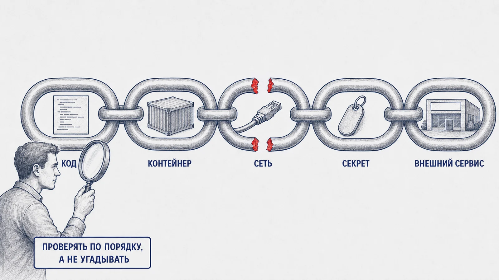
| Звено | Как выглядит поломка | Как проверить |
|---|---|---|
| 1. Код | Контейнер падает сразу после старта, в журнале ошибка | Посмотреть журнал контейнера |
| 2. Контейнер | Стартует и тут же перезапускается по кругу | Статус контейнера: постоянные рестарты видны сразу |
| 3. Сеть до внешнего сервиса | Контейнер работает, ошибок нет, но обращения наружу не проходят | Проверить, откликается ли адрес сервиса с самого сервера |
| 4. Секрет | Сервис отвечает, но отказывает в доступе | Проверить, попал ли токен в окружение контейнера |
| 5. Сам внешний сервис | Всё правильно, но ответа нет ни у кого | Страница статуса сервиса, независимая проверка |
api.telegram.org не откликается. Где порвалось?Порвалось на третьем звене: с арендованного сервера обращения к серверам Telegram не проходили, хотя с ноутбука всё работало. Это не поломка вашего кода и не ошибка агента — это свойство площадки, на которой стоит сервер. Такие ограничения зависят от провайдера, его сети и юрисдикции, и они меняются со временем.
Что с этим делать — вопрос не к уроку, а к вашей ИТ-службе: выбор площадки и маршрутов трафика для рабочих сервисов согласуется с ней. Задача этого модуля — чтобы вы, увидев такой симптом, не потеряли два часа на переписывание кода, который в порядке.
Если вы собираетесь подключать к приложению внешнюю модель по API, проверьте доступность с сервера, а не со своего ноутбука, — до того как начнёте писать код. Расположение сервера здесь определяет всё.
Как разговаривать с агентом, когда сломалось
Работает
Скопировать весь вывод целиком, ничего не сокращая, и вставить в чат. Модель читает технический текст лучше вас и часто видит причину в строке, которая вам кажется мусором.
Не работает
«Не работает, почини». Пересказ своими словами заставляет модель гадать, а гадание порождает правдоподобные, но неверные версии.
Приложение на сервере не работает. Не чини сразу — сначала найди причину и покажи её мне. Проверь по порядку и отчитайся по каждому пункту отдельно: 1. Контейнер запущен или падает? Если падает — что в журнале 2. Не перезапускается ли он по кругу 3. Доходят ли с сервера запросы до внешних сервисов, которыми пользуется приложение 4. Видит ли приложение свои секреты из окружения 5. Отвечает ли сам внешний сервис Скажи мне, на каком именно шаге порвалось, и объясни простыми словами, что это значит. Только после этого предлагай, что делать, и жди моего согласия.
Модель может по ходу отладки открыть что-нибудь наружу, чтобы проверить гипотезу. Обычно она это закрывает и упоминает мимоходом. Правило простое: после каждой длинной отладки спрашивайте, что осталось открытым. Промпт для этого есть в конце шестого модуля.
HTML-приложение: сначала Pages, потом свой адрес
Пять минут до публичной ссылки — и отдельный разговор о том, когда этого хватает, а когда нужен сервер.
У вас наверняка уже есть что-то одностраничное: калькулятор, чек-лист, генератор, памятка для коллег. На вебинаре это был «Генератор градиентных фонов» — один HTML-файл, который делает фоны для презентаций. Такое публикуется бесплатно и за пять минут.
Шаг первый: публичная ссылка за пять минут
Давай разместим это приложение на GitHub Pages, чтобы у других людей был к нему доступ напрямую по ссылке. Перед публикацией проверь, что в репозитории нет ничего лишнего: ключей, токенов, персональных данных, черновиков и моих личных файлов. Репозиторий будет публичным, и всё, что в нём есть, увидят все. В конце дай мне готовую ссылку и скажи, что именно я должен нажать в настройках репозитория, если понадобится что-то поменять.
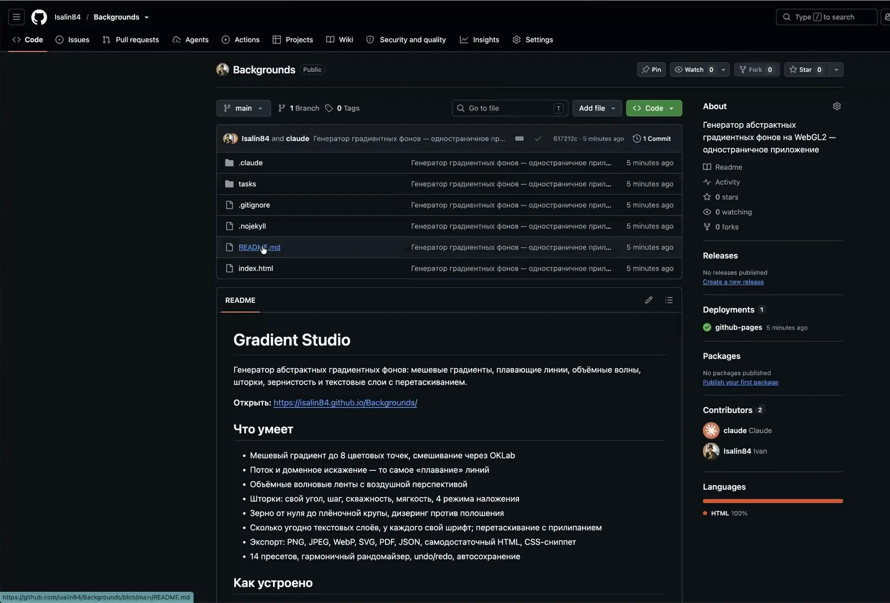
Страница репозитория → Settings → раздел Pages. Там же выбирается ветка и папка,
из которых собирается сайт. Адрес будет вида https://ваш-логин.github.io/имя-репозитория/.
На бесплатном тарифе Pages работает только с публичными репозиториями. Виден не только результат, но и весь код, и вся история коммитов. Если полгода назад в проект случайно попал ключ и потом был «удалён» — он всё ещё в истории. Проверяйте это до публикации.
Когда Pages хватает, а когда нет
Шаг второй: свой адрес и сервер
Адрес вида github.io/что-то работает, но выглядит как черновик. Если приложение
показывают клиентам или коллегам, ему нужен нормальный адрес. Здесь мы возвращаемся к пятому модулю:
заводим поддомен и вешаем его на сервер.
Вот как выглядела задача на вебинаре — обратите внимание на две вещи: агенту заранее отдали справку по серверу (о ней девятый модуль) и попросили пошаговую инструкцию для человека.
Размести это приложение на сервере, данные сервера я дам в MD-файле. Нужно привязать доменное имя через регистратора: должно получиться bg.мойдомен.ru Дай мне пошаговую инструкцию, что и как я должен сделать сам, чтобы это заработало. Разворачивай на том сервере, который я укажу. Доступ по SSH тебе обеспечен ранее. Сначала покажи план. Пиши план с объяснениями — я только начинаю разбираться в программировании.
| Делает агент | Делаете вы |
|---|---|
| Ставит приложение в контейнер на сервере | Заводите A-запись у регистратора |
| Настраивает обратный прокси на нужный поддомен | Проверяете, что открылось в браузере |
| Получает сертификат HTTPS | — |
| Настраивает обновление из репозитория | Делаете push, когда что-то поменяли |
A-запись лучше добавить сразу, пока агент настраивает сервер: к моменту, когда дело дойдёт до сертификата, она уже разойдётся. Если не успела — ничего не сломается: прокси повторит попытку выпуска сам, с нарастающей паузой. На вебинаре запись разошлась примерно за полчаса, хотя ожидали несколько часов.
Как приложение будет обновляться дальше
Разумная схема, которую агент обычно предлагает сам: вы правите файл у себя, делаете push
в репозиторий, а сервер раз в несколько минут забирает свежую версию. Никаких ручных копирований.
У этой схемы есть тихий отказ, о котором стоит знать заранее: если обновление зависнет на середине, автоматика может остановиться навсегда и без единой записи об ошибке. Ровно это нашло код-ревью на вебинаре — разбор в десятом модуле.
Передача эстафеты между сессиями
Приём, который на вебинаре выглядел мелочью, а на деле — главный новый навык этого урока. Особенно если проект переживёт вас в компании.
Проблема, которая всплывает на втором приложении
Вы настроили сервер в одной сессии с агентом. Через неделю открываете новую сессию, чтобы поставить туда второе приложение. И она не знает ничего: ни что за сервер, ни какой прокси, ни где что лежит, ни какие грабли уже собраны.
Память агента — это переписка. Закрыли — забыл. Файлы проекта он прочитает, а вот сервер — отдельная вселенная, которой в файлах нет.
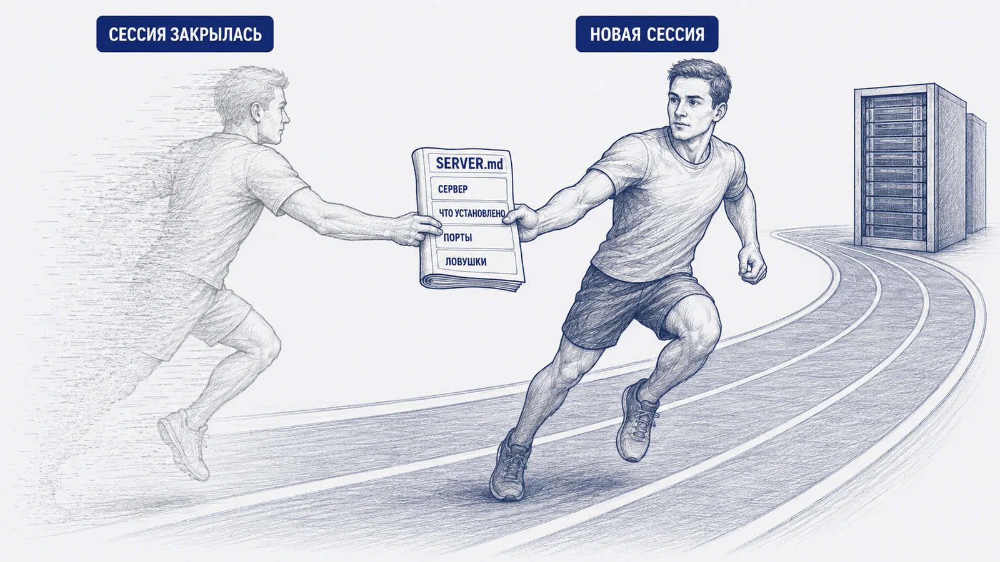
Перед тем как закрыть работу с ботом, агента попросили: «подготовь справку в формате MD для другого агента, который будет разворачивать здесь другие приложения». Он собрал документ с описанием железа, Docker, прокси и настроек. Этот файл потом просто вставили в новую сессию — и она сразу продолжила с нужного места, ничего не переспрашивая.
Стоило это одну минуту. Сэкономило — минимум полчаса разбирательств и один риск того, что вторая сессия сломает настройки первой.
Что должно быть в справке
| Раздел | Зачем |
|---|---|
| Что за сервер | Провайдер, ОС, конфигурация, как заходить |
| Что уже установлено | Docker, прокси, автообновления — чтобы не поставили второй раз |
| Что уже работает | Список приложений, их адреса и порты. Чтобы новое не заняло чужой |
| Где что лежит | Пути к файлам конфигурации и данным |
| Как устроена безопасность | Какие порты открыты, где секреты, кто может заходить |
| Как обновляются приложения | Автоматически из репозитория или руками |
| Ловушки | Самое ценное. Всё, обо что уже споткнулись |
На вебинаре в такую справку попала заметка о том, что с этого сервера не проходят обращения к серверам Telegram. Через несколько часов эта же строчка объяснила, почему может зависнуть автообновление из репозитория. Записанная ловушка сработала дважды.
Ни паролей, ни токенов, ни приватных ключей, ни содержимого файла с секретами. Справка описывает устройство, а не содержимое сейфа. Писать «токен лежит в переменной окружения BOT_TOKEN» — правильно. Писать сам токен — нет.
Тот же приём, но для людей
Ровно эта справка — то, что вы отдадите коллеге или подрядчику, когда проект перестанет быть вашим личным. И то, что попросит ИТ-служба, когда спросит «а что у нас там крутится и кто это настраивал».
Здесь же ответ на большой вопрос, который на вебинаре звучал так: «а что будет, если человек, который всё это внедрил, уйдёт?». Ответ: ничего страшного, если он оставил документацию. Приложение, собранное вайбкодингом без единой строчки описания, — это риск для компании, а не достижение.
Код-ревью: агент проверяет сам себя
Разбор трёх настоящих находок с вебинара. Все три ошибки допустил сам агент при развёртывании — и сам же их нашёл, когда его попросили проверить.
Агент делает ошибки. Не «иногда, если не повезёт», а регулярно — и именно в той части, которую вы не смотрите, потому что она уже «работает». Проверка после развёртывания — это не перестраховка, а обязательный шаг, такой же как коммит. На вебинаре он занял пять минут и нашёл три реальные проблемы в свежесобранной инфраструктуре.
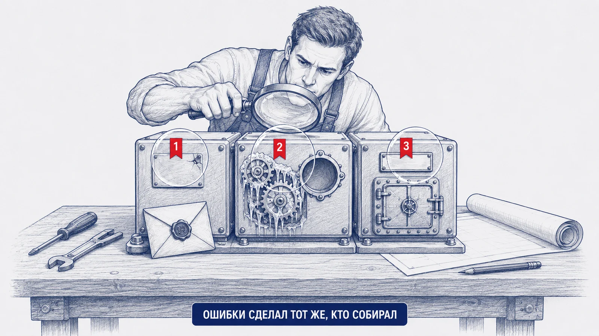
Как это запускается
В Claude Code для этого есть готовая команда /code-review — она приходит из
установленного плагина. Это не «скилл» и не коннектор: три разные сущности, и их часто путают.
| Что | Что это | Пример |
|---|---|---|
| Плагин | Набор готовых команд, которые появляются в агенте | /code-review |
| Скилл | Папка с инструкцией, которую агент читает и начинает работать по ней | Скилл, который пишет по-русски без канцелярита |
| Коннектор (MCP) | Подключение агента к внешней системе | Календарь, документация библиотек, ваш трекер |
Если в вашем агенте такой команды нет — ничего страшного. Тот же результат даёт обычный промпт, он есть ниже в этом модуле.
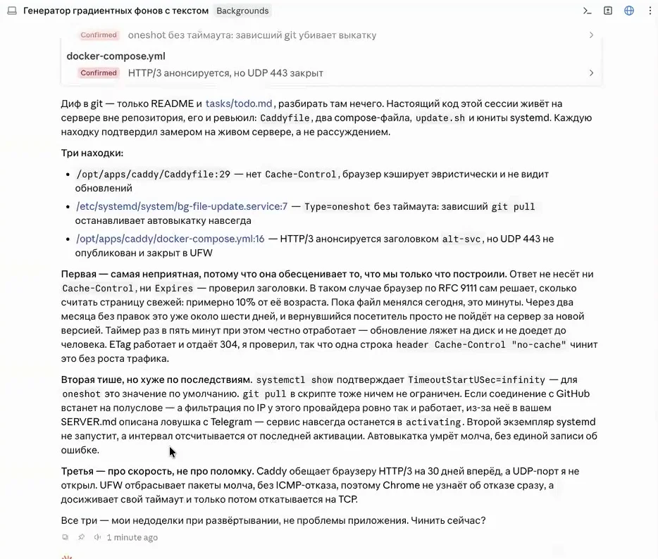
Находка первая: страница обновилась, а люди этого не увидят
/opt/apps/caddy/Caddyfile:29 — нет Cache-Control, браузер кэширует
эвристически и не видит обновлений.
Что это значит по-человечески. Когда сервер отдаёт страницу, он может приложить записку: «считай её свежей столько-то минут». Такой записки не было. В этом случае браузер решает сам — и по общему правилу считает страницу свежей примерно десятую часть её возраста.
Пока файл правился сегодня, это минуты, и проблемы не видно. Через два месяца без правок это уже около шести дней: вернувшийся посетитель просто не пойдёт на сервер за новой версией. Автообновление при этом честно отработает, новая версия ляжет на диск — и не доедет до человека.
Почему это самая неприятная из трёх. Она обесценивает всё, что мы только что построили: вы обновляете приложение, а пользователи месяцами видят старое и никто не понимает, почему.
Находка вторая: автообновление, которое умирает молча
/etc/systemd/system/bg-file-update.service:7 — Type=oneshot без таймаута:
зависший git pull останавливает автовыкатку навсегда.
Что это значит по-человечески. Раз в пять минут сервер ходит в репозиторий за свежей версией. У этого похода не было ограничения по времени. Если соединение встанет на полуслове — не оборвётся, а именно зависнет — задача останется «выполняющейся» вечно.
Дальше самое неприятное: следующая попытка не запустится, потому что предыдущая формально ещё идёт. Автообновление умрёт навсегда, без единой записи об ошибке. Вы будете делать push, видеть, что всё «прошло», и не понимать, почему на сайте ничего не меняется.
И обратите внимание, как связались две вещи: соединение может зависнуть именно из-за сетевых ограничений площадки — тех самых, что описаны в справке по серверу из девятого модуля. Записанная ловушка объяснила вторую проблему.
Находка третья: обещание, которое сервер не может выполнить
/opt/apps/caddy/docker-compose.yml:16 — HTTP/3 анонсируется заголовком
alt-svc, но UDP 443 не опубликован и закрыт в файрволе.
Что это значит по-человечески. Сервер сообщает браузеру: «умею быстрый протокол, приходи по нему следующие 30 дней». Браузер запоминает и в следующий раз идёт по нему — а дверь закрыта. Причём закрыта молча: файрвол не отвечает «нельзя», он просто выбрасывает пакеты. Браузер честно ждёт до конца таймаута и только потом возвращается к обычному способу.
Это не поломка, а замедление. Сайт работает, просто первое соединение у части посетителей будет дольше, чем должно.
Все три находки были исправлены в тот же день. Первая — одной строкой в настройках, вторая — ограничением по времени на обновление, третья — открытием порта. Ни одна из них не была проблемой самого приложения: это ошибки развёртывания, то есть ровно та часть, которую человек без опыта не проверит никогда.
Универсальный промпт код-ревью
Работает в любом агенте, где команды /code-review нет. Главное в нём — требование
проверять на живой системе, а не рассуждать: именно это отличает полезный отчёт от правдоподобного.
Сделай ревью того, что ты сейчас развернул. Проверяй настоящее состояние сервера, а не свои намерения: каждую находку подтверждай замером на живой системе, а не рассуждением о том, как должно быть. Смотри в первую очередь на то, что настраивал ты сам, а не на код приложения: конфигурацию прокси, файлы запуска служб, таймеры и автообновления, файрвол, права на файлы, переменные окружения. По каждой находке скажи: 1. Файл и строка 2. Что не так — одной фразой 3. Что именно сломается у пользователя и через какое время 4. Как проверить, что я не выдумываю: команда или замер Раздели находки на три группы: ломает сейчас, сломается позже незаметно, влияет только на скорость. Ничего не чини, пока я не скажу.
После каждого развёртывания. После каждой длинной отладки. Перед тем как дать ссылку посторонним. И перед тем как приложением начнут пользоваться коллеги — тем более если в нём есть учётные записи, загрузка файлов или чужие данные.
Что меняется, когда приложение стало публичным
Пока приложение жило на вашем ноутбуке, рисков почти не было. Как только у него появился адрес в интернете — появились и обязанности.
Две истории, которые стоит услышать до, а не после
Из бота сделали казино
Токен бота, выложенный в публичный репозиторий несколько лет назад, нашли автоматические сканеры. Бот продолжал числиться за владельцем, но рассылал уже чужой контент. Обнаружилось это случайно, при проверке старых репозиториев.
Логин и пароль от сервера в облаке
Ранняя версия агента, разворачивая приложение, честно сохранила данные доступа к серверу в файл проекта — и он уехал в репозиторий вместе со всем остальным. Кто угодно, зайдя в репозиторий, мог войти на сервер.
Обе истории — не про плохие инструменты. Они про то, что секрет, попавший в репозиторий, считается скомпрометированным навсегда: даже если файл удалить, он останется в истории коммитов. Единственное лечение — отозвать и выпустить заново.
Что проверять после запуска, а не до
Список из шестого модуля закрывает день развёртывания. Дальше начинается эксплуатация, и у неё свой ритм.
| Когда | Что сделать |
|---|---|
| После каждой заметной правки | Убедиться, что приложение поднялось, а не осталось на старой версии |
| Раз в месяц | Спросить агента: что открыто наружу, всё ли обновлено, нет ли новых предупреждений |
| Перед тем как дать ссылку посторонним | Полное ревью плюс проверка репозитория на секреты |
| Когда появились пользователи | Отдельный разговор про их данные — следующий раздел |
| Когда проект перестал быть нужен | Удалить сервер, отозвать ключи, снять домен с автопродления |
Персональные данные: коротко и по делу
Как только ваше приложение собирает сведения о людях — имя, телефон, почту, фотографию, результаты, данные о сотрудниках, — оно попадает под закон о персональных данных (152-ФЗ). Ключевые факты в двух строчках:
- Обработка персональных данных требует уведомления в Роскомнадзор — по общему правилу до начала обработки. Исключений мало, и они узкие
- Нужно согласие человека, понятная цель сбора, срок хранения и возможность удалить данные
- За нарушения предусмотрены штрафы; в последние годы они выросли, а проверки стали заметнее
- Хранение данных россиян должно происходить на серверах в России — это отдельное требование
Правило, которое стоит принять: в учебном приложении не собирайте настоящие данные людей. Придумайте фамилии, используйте тестовые телефоны, обезличивайте. Как только проект становится рабочим — идите к юристу и в ИТ-службу до запуска, а не после первого обращения.
Это не формальность. Уведомление оператора персональных данных приходит и по личным проектам: если приложение публично и собирает данные, вас увидят.
Про подключение к рабочим системам
Отдельная большая тема — доступ агента к 1С, Битриксу, CRM, банковским и учётным системам. Технически это делается через ключ доступа, и агент разберётся сам. Организационно — три правила, которые нарушать нельзя:
Только чтение
Ключ должен давать право смотреть, а не менять. Даже если система позволяет больше — берите минимум, который решает задачу.
Только через ИТ
Ключ от рабочей системы выдаёт её владелец, а не вы себе сами. Разговор начинается с описания задачи, а не с просьбы «дайте ключ».
Сначала песочница
Тестовый контур, обезличенные данные, ограниченный круг. Боевая система — последний шаг, а не первый.
Мы с вами — любители. Сильная модель, правильно настроенная, действительно находит то, чего не увидит человек без опыта, — и часто наоборот. Но это не заменяет специалиста по информационной безопасности, который видел настоящие атаки и утечки. Для личного проекта достаточно агента и здравого смысла. Для рабочего — нужен человек.
Проведи ежемесячную проверку моего сервера и приложений. Отчитайся коротко, по пунктам: 1. Что сейчас открыто наружу и изменилось ли это с прошлого раза 2. Есть ли необновлённые пакеты с известными уязвимостями 3. Работают ли все приложения и не застряло ли автообновление 4. Не появилось ли в репозиториях чего-то, чего там быть не должно 5. Сколько свободного места на диске и не растут ли журналы бесконтрольно 6. Что из этого требует моего решения, а что ты можешь починить сам Ничего не меняй, пока я не отвечу.
Оснастка агента: доступы, коннекторы, скиллы
Четыре разные сущности, которые постоянно путают между собой. Разберём, что где включается и что из этого нужно именно вам.
Как агент на самом деле получает доступ к GitHub
Вопрос, который на вебинаре остался открытым, и вот на него ответ.
Агент, работающий у вас на компьютере, ходит в GitHub не через коннектор,
а обычными средствами вашей же машины: программой git и вашей сохранённой авторизацией.
Отдельно ничего подключать не надо. Достаточно один раз авторизоваться на своём компьютере —
и дальше агент отправляет коммиты от вашего имени.
| Способ авторизации | Как выглядит | Кому подходит |
|---|---|---|
Утилита gh | Одна команда gh auth login,
открывается браузер, подтверждаете — готово | Самый простой путь, начните с него |
| SSH-ключ | Тот же принцип, что и с сервером: пара файлов, открытый добавляется в профиль GitHub | Если ключи уже настроены |
| Токен доступа | Длинная строка, которая подставляется вместо пароля | Для автоматизации; хранить как секрет |
Обычный пароль учётной записи при отправке кода не принимается с 2021 года. Если вы видите
отказ авторизации при первом push — дело именно в этом, а не в правах на репозиторий.
Коннекторы и MCP
MCP — стандарт, по которому агент подключается к внешним системам: календарю, почте, базе, трекеру задач, вашей учётной системе. Коннектор — конкретное такое подключение. Из первого урока: MCP не заменяет API, он работает переводчиком между агентом и обычным API сервиса.
Список подключённых коннекторов лежит в настройках самого приложения-агента. Важно понимать: коннекторы приложения и работа агента с вашим компьютером — разные вещи. Git, файлы и терминал доступны агенту напрямую, коннектор для них не нужен.
Документация библиотек: Context7
Полезный коннектор для тех, кто собирается кодить регулярно. Что он делает на самом деле: отдаёт агенту свежую документацию библиотек и фреймворков в момент работы.
Зачем это нужно. Модель обучена до определённой даты. Библиотеки с тех пор обновились: что-то переименовали, что-то убрали. Модель уверенно пишет код по старой памяти, он не работает, и вы вдвоём час ищете причину. С доступом к актуальной документации этот класс ошибок почти исчезает.
Коннектор отдаёт документацию, а не сами библиотеки — устанавливает их всё равно ваш компьютер или сервер. И, кстати, версии Python выглядят как 3.13 или 3.14: числа после точки растут, а тройка в начале остаётся уже много лет.
Плагины и скиллы
Плагин
Приносит в агента готовые команды — то, что вы вызываете
через косую черту. Пример: /code-review из десятого модуля.
Скилл
Папка с инструкцией: как делать определённую работу. Агент читает её и начинает работать по правилам. Скилл можно просто отдать другому агенту файлом и попросить «установи себе» — часто этого достаточно.
Практический пример из вебинара: скилл, который заставляет модель писать по-русски живым языком, без канцелярита и характерных оборотов машинного текста. Его переносят между разными агентами копированием.
Куда это ведёт дальше
Через коннекторы агент подключается не только к разработческим сервисам. Реальные примеры, которые обсуждались на вебинаре: данные спортивного трекера с рекомендациями по нагрузке, брокерский счёт с разбором портфеля, домашняя бухгалтерия с анализом расходов. Всюду принцип один: агент получает право смотреть, а не менять.
Подключение агента к рабочим системам компании — 1С, Битриксу, CRM, складу — технически не сложнее, чем к личному трекеру. Организационно это совсем другая история: ключ выдаёт владелец системы, доступ обсуждается с ИТ и безопасностью, начинают с тестового контура. Разница между «я попробовал на своих данных» и «я подключил рабочую систему» — это разница между экспериментом и инцидентом.
Полезные ссылки
Всё, что упоминалось в уроке, в одном месте. Проверено на 20 августа 2026 года — цены и интерфейсы меняются, ссылки живут дольше.
Где арендовать сервер
| Сервис | Что это | Порядок цен |
|---|---|---|
| Selectel | Российский провайдер, VDS в Москве и Санкт-Петербурге, посуточное списание | от 200 ₽/мес |
| REG.RU | Регистратор доменов, он же хостинг и серверы | серверы дороже, домены от ~200 ₽/год |
| Timeweb Cloud | Ещё один российский провайдер с недорогими тарифами | от ~200 ₽/мес |
Выбор провайдера влияет на то, какие внешние сервисы будут доступны с вашего сервера, — об этом седьмой модуль. Для рабочих задач площадку согласуйте с ИТ-службой.
Инструменты, о которых шла речь
| Что | Зачем |
|---|---|
| Docker | Упаковка приложения вместе с окружением. Локально нужен, только если собираете контейнеры у себя |
| Caddy | Обратный прокси, который сам получает и продлевает сертификат HTTPS |
| nginx | Классическая альтернатива: мощнее, настраивается руками |
| Let's Encrypt | Бесплатные сертификаты HTTPS, срок 90 дней, продление автоматическое |
GitHub CLI (gh) |
Авторизация на GitHub одной командой — то, что нужно перед первым push |
| GitHub Pages | Бесплатная публикация статических страниц из репозитория |
| Context7 | Свежая документация библиотек для агента |
Чем проверить, что всё работает
| Сервис | Что показывает |
|---|---|
| DNS Checker | Разошлась ли ваша DNS-запись по миру |
| SSL Labs | Насколько правильно настроен HTTPS на вашем адресе |
| Security Headers | Какие защитные заголовки отдаёт сайт, а какие забыли |
| PageSpeed Insights | Скорость загрузки и что именно тормозит |
Telegram
| Что | Где |
|---|---|
| Создать бота, сменить имя и аватарку, отозвать токен | @BotFather |
| Документация Bot API | core.telegram.org/bots/api |
Закон и персональные данные
| Что | Где |
|---|---|
| Закон 152-ФЗ «О персональных данных» | Официальный портал правовой информации |
| Уведомление об обработке персональных данных | Портал персональных данных Роскомнадзора |
Материалы здесь для ориентировки. Решение по конкретному проекту принимает юрист, а не урок и не агент.
Материалы курса
| Что | Где |
|---|---|
| Урок 1: устройство приложения, API, Git, секреты, свой Telegram-бот | isalin84.github.io/Vibecoding_1 |
| Этот урок | страница, которую вы читаете |
Ваш результат
Сколько набралось, что стоит перечитать, сертификат и шпаргалка, которую имеет смысл держать под рукой при каждом деплое.
Сертификат
Впишите имя — сертификат соберётся сразу. Кнопка сохранит его картинкой.
Шпаргалка деплоя
- Решите, где приложение должно жить, до того как начали
- SSH-ключ при создании сервера, пароль потом выключить
- Режим плана перед большой задачей, план прочитать целиком
- Код едет через репозиторий, секреты — отдельно и вручную
- A-запись добавить сразу, пока настраивается сервер
- После развёртывания — проверка безопасности и код-ревью
- SERVER.md в конце каждой сессии, где трогали сервер
- Не нужен больше — удалить сервер, а не остановить
- Показывать пароль от сервера на демонстрации экрана
- Жить под
rootи оставлять вход по паролю - Делать репозиторий публичным, не проверив историю коммитов
- Считать, что «заработало» значит «настроено правильно»
- Покупать отдельный домен под каждое приложение
- Собирать настоящие данные людей в учебном проекте
- Подключать рабочие системы, не поговорив с ИТ
- Закрывать сессию, не оставив справку по серверу
Что делать дальше
На этой неделе
Опубликуйте одну свою страницу на GitHub Pages и отправьте ссылку коллеге. Это бесплатно, занимает пятнадцать минут и снимает страх перед публикацией навсегда.
Результат: первая публичная ссылка
В течение месяца
Вынесите на сервер то, что должно работать без вас. Один сервер, два приложения, свой домен, справка по серверу в проекте.
Результат: инфраструктура, которую вы понимаете
Постоянно
После каждого развёртывания — проверка безопасности и код-ревью. Не потому что страшно, а потому что агент ошибается ровно там, куда вы не смотрите.
Результат: привычка, которая однажды спасёт проект
То, что работает у вас на ноутбуке, — ещё не продукт. Продукт — это то, что работает, когда вас нет. Теперь вы знаете, что для этого нужно, и главное — понимаете, что именно делает агент, когда делает это за вас.
Иван Салин · bestpracticeai.ru · t.me/bestpractice_ai
с 1993 года каждый день заботимся о вас